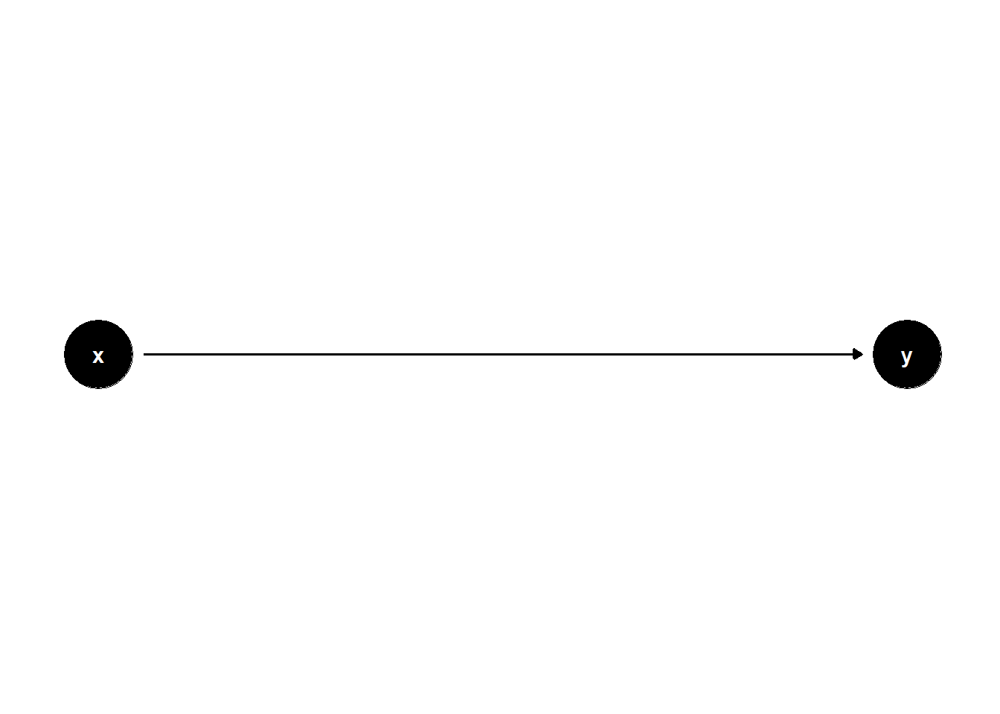
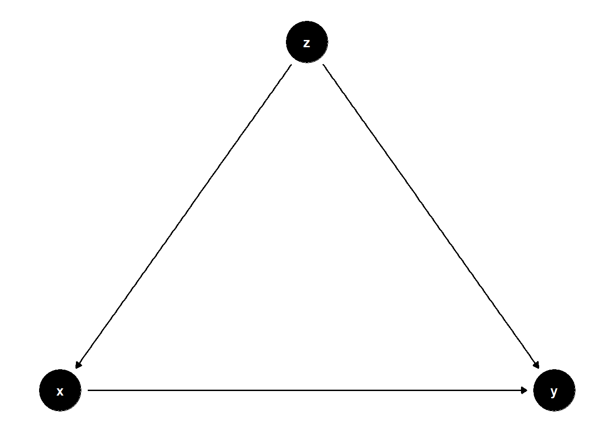
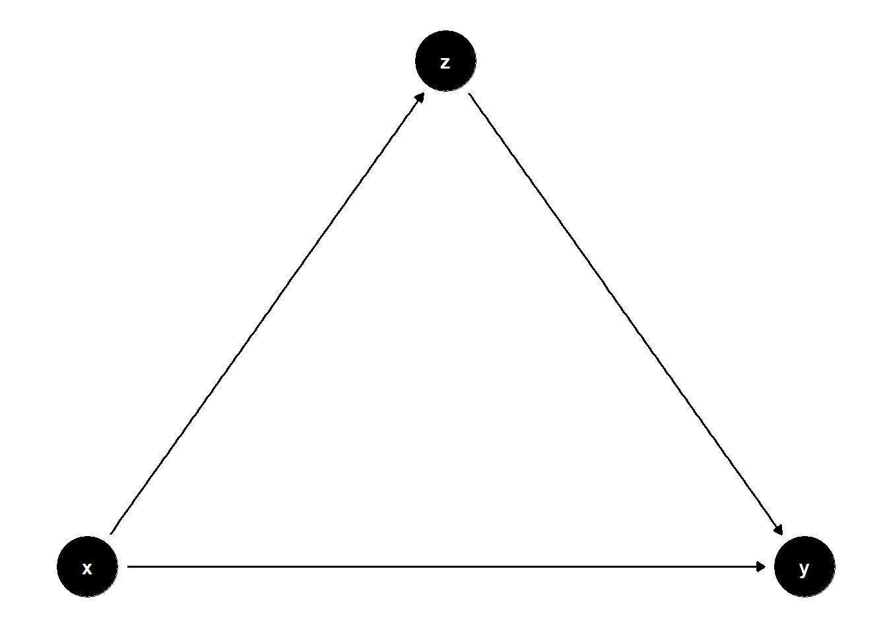
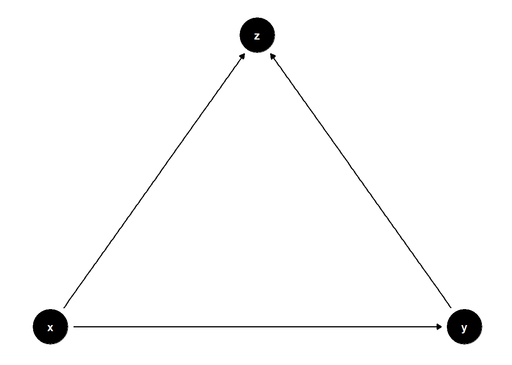
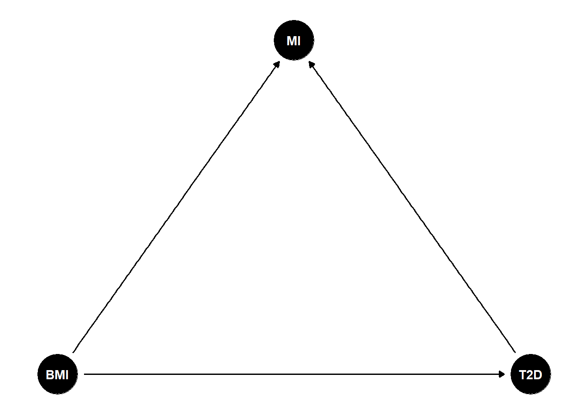
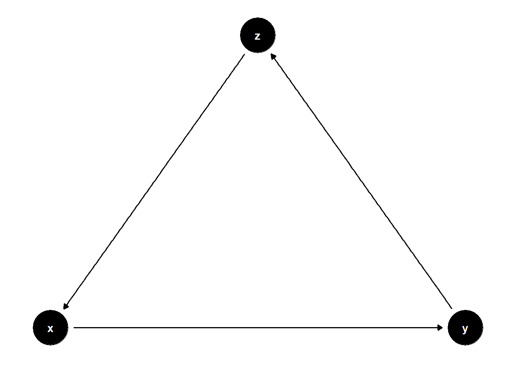
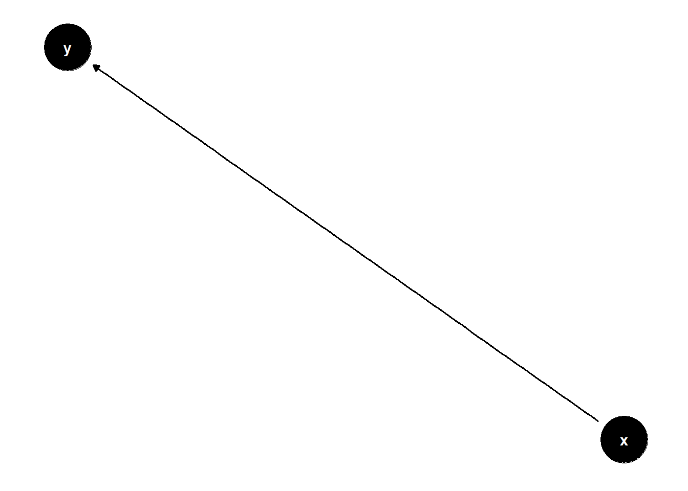

2 Directed Acyclic Graphs (DAG)
2.1 What is a Directed Acyclic Graph (DAG)?
A Directed Acyclic Graph (DAG) is a visual tool to represent putative causal relationships between variables in observational research. In the case of etiological epidemiology, we are interested in assessing the causal effect of an exposure on an outcome. Before embarking on statistical analyses DAGs can help us map our prior knowledge and assumptions about the various mechanisms that influence or explain the causal effect we are interested in. DAGs can help to guide us in the design of our study, the choice of which data to collect, and in how to set up our statistical analysis to adequately control for known sources of bias and confounding.
In preparation for our workshop on mediation analysis, it is important that you understand the basic concepts and notations used when drawing and communicating about our causal assumptions using DAGs.
2.2 Simple example
DAGs help us describe our hypotheses and assumptions about a system of causes and effects. Let’s think of a simple example:
X represents a light switch (the cause)
Y represents whether a light bulb is on or off (the effect)
In observational epidemiology we often also see the cause referred to as the exposure or determinant. The effect is often referred to as the outcome.
When we flip the switch (X):
Switch up → Light on
Switch down → Light off
This simple cause-effect relationship can be drawn as: X → Y.
DAGs consist of two basic elements:
Nodes: Points representing variables (like X and Y)
Edges: Arrows representing known or suspected causal relationships between variables (like X → Y)
A directed path (often simply referred to as a path) is any arrow-based route between two variables on the graph.
Now let’s introduce another variable Z into the graph. The path is X→Y→Z.
- Ancestor: A variable that influences another (X is an ancestor of Y)
- Descendant: A variable influenced by another (Z is a descendant of Y)
Note that both X and Y are ancestors of Z, and both Y and Z are descendants of X. In other words, all variables that influence a given variable are its ancestors and all variables that are influenced by it are its descendants, even if they are only connected indirectly.
We can use DAGs to illustrate some key terminology in epidemiology.
2.3 Confounders:
A confounder is a cause (ancestor) of both the exposure and the outcome of interest which is not on the causal pathway between the two. It is a problem in observational epidemiology because confounding may cause a spurious association between exposure and outcome. This means that we need to account for potential confounders before we can make a causal inference about the relationship between exposure and outcome. In a DAG, we can represent a confounder by a node (Z) with arrows pointing toward both X and Y, indicating that it is an ancestor of both the exposure X and the outcome Y.

2.4 Mediators:
A mediator is a variable that lies on the causal pathway between the exposure (X) and the outcome (Y). In a DAG, it is a descendant of X and an ancestor of Y, meaning that X influences Y, at least in part, through the mediator (Z).

2.5 Colliders:
A collider is a variable that is a consequence (is caused by) both the exposure and the outcome of interest. In a DAG, a collider has both edges pointing into its node. In the DAG below Z is a collider because it is a descendant of both the exposure X and the outcome Y.

It is important to identify potential colliders, because adjusting for or stratifying by a them (conditioning on a collider) can introduce a spurious association between the exposure and the outcome.
Consider the relationship between Body Mass Index (BMI) and Type 2 Diabetes (T2D). Both BMI and T2D are causes of increased incidence of Myocardial Infarction (MI), making MI a collider in this DAG. If we were to study the causal effect of BMI on T2D only in people who have a history of MI, we would be conditioning on a collider. We might then find a spurious association (could be stronger, weaker or even inverse) between BMI and T2D. In order to avoid this introduction of bias we should avoid conditioning (selecting) on a collider.

2.6 DAGs must be acyclic:
A DAG must be acyclic (the A in DAG), meaning that it does not contain any feedback loops. In other words, a variable cannot be its own descendant (not even via mediators). The examples discussed so far are all valid DAGs because they maintain this property. However, the following example is not a DAG, as it contains a cycle:

Tip: Read this reference for more background!
This brief introduction to DAGs follows an excellent tutorial. Read this reference to get a bit more background than we can cover here.
2.7 Create your own DAG
There are a number of tools we can use to create and analyze DAGs. DAGitty is a popular tool for working with DAGs. Notably, DAGitty has a graphical interface we can use to create, edit, and analyze DAGs directly in our web browser. We can access DAGitty in our browser by navigating to https://www.dagitty.net/ and clicking on Launch DAGitty online in your browser.
You can also use R package ggdag to create DAGs.
# Load the packages we will need below
library(dplyr, warn.conflicts = FALSE)
library(ggdag, warn.conflicts = FALSE)
library(ggplot2)# Create a DAG called chain
chain <- dagify(
y ~ x # The form is effect ~ cause
)
# Print the values stored in 'chain' to the screen
chaindag {
x
y
x -> y
}# Plot the 'chain' dag and print it to the screen
ggdag(chain)
Tip: Use DAGs to map out your research question!
Drawing, understanding and communicating epidemiological considerations with DAGs can be complex. The best way to learn is by making your own DAGs representing a topic you work with or know well. For example, follow the steps in the exercise below and if you have time try it once more with other variables.
Excercise: draw a DAG
Suppose your research question is: What is the relationship between physical activity (PA) and Type 2 Diabetes (T2D)? We hypothesize that increased physical activity reduces the risk of developing T2D.
Exposure: Physical activity
Outcome: Type 2 Diabetes
The dataset includes age, sex, ethnicity (Eth), physical activity (PA), Type 2 Diabetes (T2D) and history of CVD (CVD). Using these variables, construct a Directed Acyclic Graph (DAG) to illustrate potential causal relationships and identify possible confounders, mediators and colliders. You may also consider using U to represent unknown factors.
Compare and discuss your DAG with your peers to identify similarities, differences, and potential improvements.
How would the DAG change if you are just starting to plan a study?
During the study planning phase, the structure of the DAG might evolve based on additional considerations. For example:
Identifying further potential confounders: These are variables that may affect both the exposure (physical activity) and the outcome (Type 2 diabetes), and should therefore be measured and adjusted for. Potential confounders could include factors such as diet, neighborhood environment, income, and genetic predisposition.
Identifying furhter potential colliders: These are variables that are dependent on both the exposure (physical activity) and the outcome (Type 2 diabetes). We should avoid selecting (stratifying) or otherwise conditioning on colliders. Can you think of 1 or 2 additional potential colliders?
2.8 Take home messages
DAGs are a visual tool that helps us map out and communicate our assumptions about a causal relationships.
The are very useful in the design and analysis phases of observational research, as they force researchers to explicitly state their assumptions about how various variables are causally linked to each other.
DAGS help researchers to identify whether causal effects can be estimated, and which adjustments are necessary, optional or should be avoided to obtain unbiased results.
2.9 Recommended reading
If you are interested in learning more about DAGs, here is the list. Have fun reading!
Note
Pearl, J. (2009). Causality: Models, Reasoning, and Inference. Cambridge University Press.
Pearl, J., & Mackenzie, D. (2018). The book of why: the new science of cause and effect. Basic Books.
Hernán MA & Robins JM. Causal Inference: What If. Boca Raton: Chapman & Hall/CRC, 2020.
Digitale, J.C. et al. (2022) Tutorial on directed acyclic graphs. Journal of Clinical Epidemiology, Volume 142, 264 - 267
Rohrer, J. M. (2017). Thinking Clearly About Correlations and Causation: Graphical Causal Models for Observational Data.